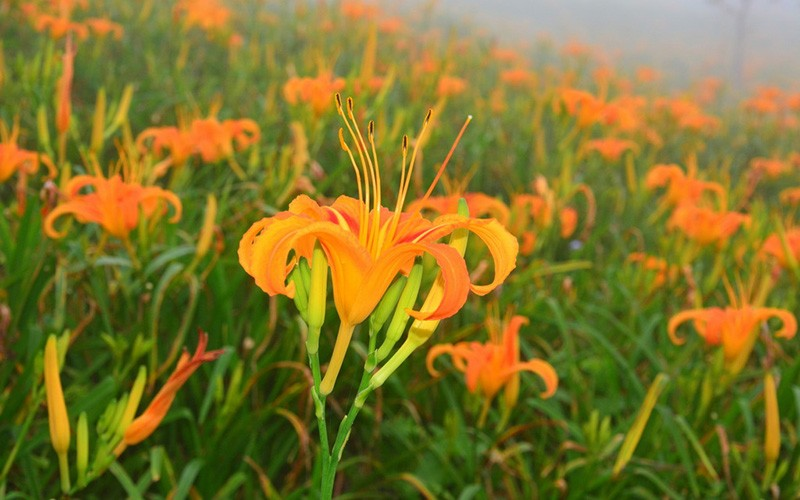
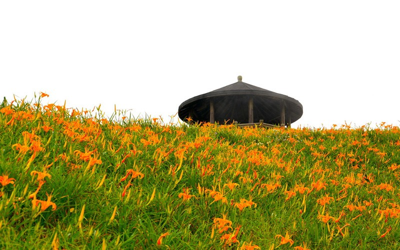
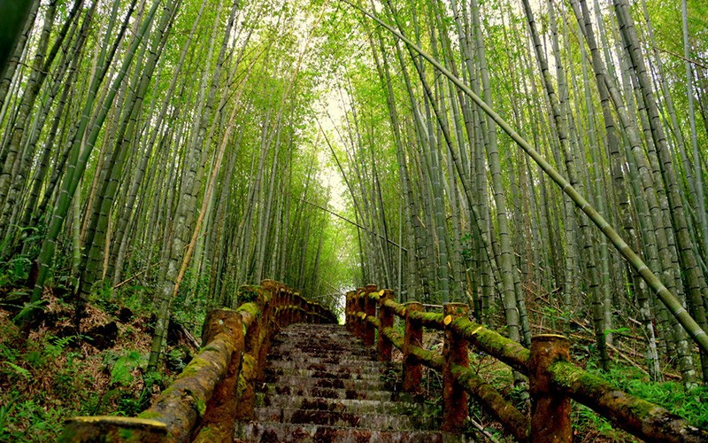
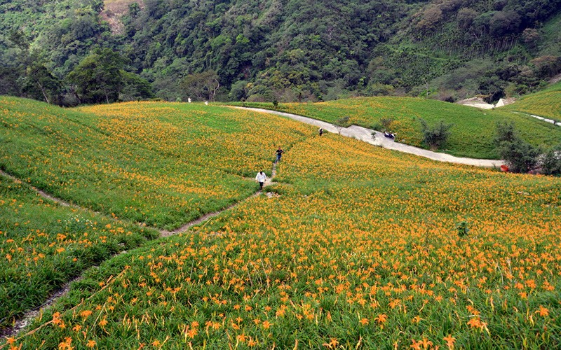
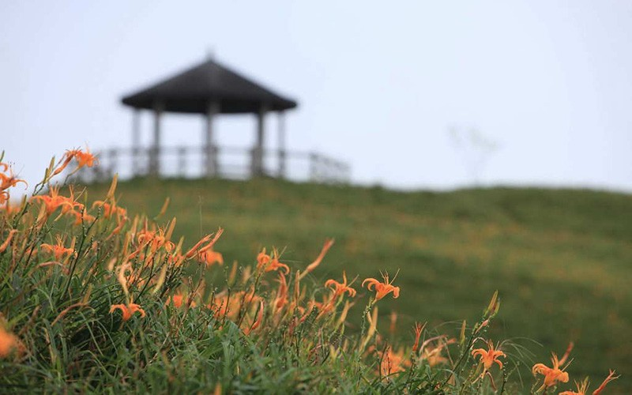
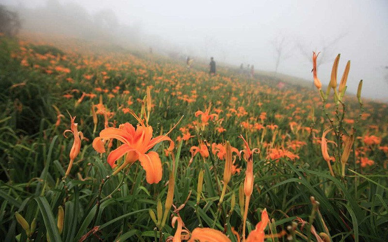
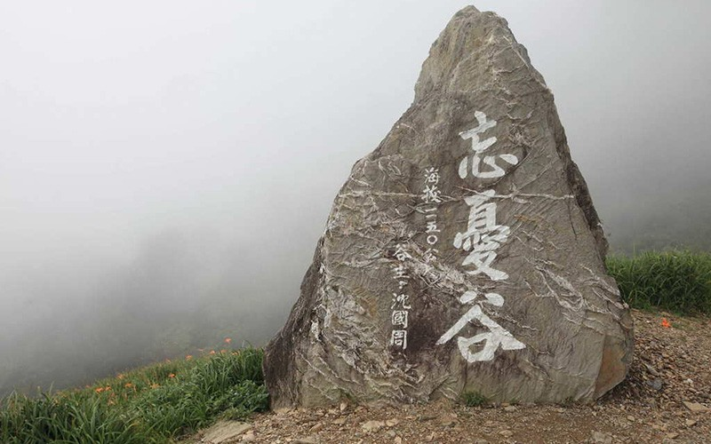
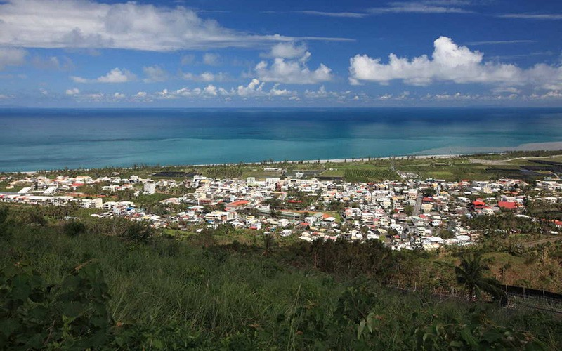
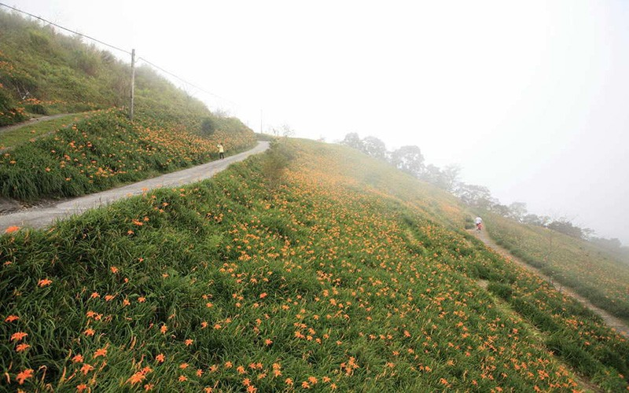
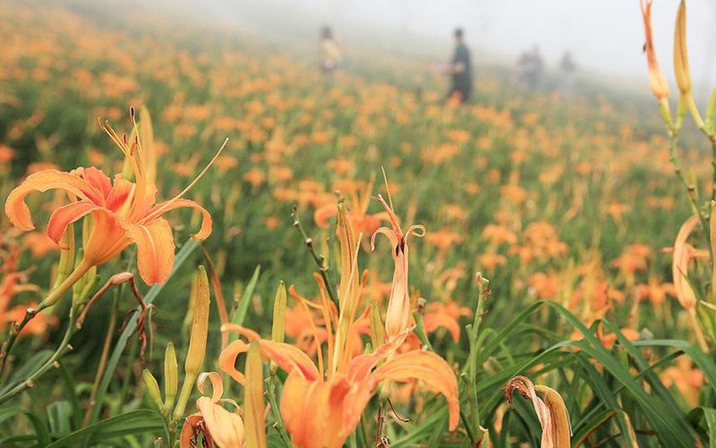
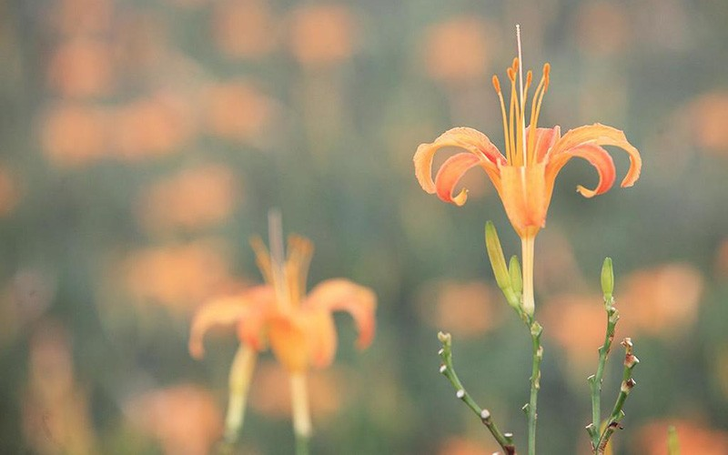
金針山休閒農業區
金針山花季：
1~2月櫻花，3~4月野百合，5~7月繡球花，8~10月金針花，11~12月杏花。
除賞花之外，從太平洋昇起的日出亦是一大絕景。
金針山景觀豐富有溪流有瀑布有高山有峽谷，炎夏賞花淡季時，來到金針山不怕沒有東西看，深入山林，沿著溪谷，螢光點點，心曠神怡。
金針山3步道
一：迎曦樓，湛藍若洗，孟宗竹道，遊客中心。
二：觀海樓，大腳印步道，摘星樓。
三：楓林步道，千鶴亭，雙乳蜂(曙光亭與千禧亭和一等三角點)，晨曦亭，忘憂亭，忘憂谷，秀峰亭。
介紹
位於太麻里的金針山是座名聞遐邇的賞花名勝，除了金針花季之外，四季造訪皆能觀賞到滿山遍野的美景。
1~2月櫻花，3~4月野百合，5~7月繡球花，8~10月金針花，11~12月杏花。
金針山氣候變化豐富，日照時間長，為植物生長提供了絕佳的條件，因此除各類花卉，此處也盛產釋迦、枇杷、洛神花、太峰茶、玉荷包荔枝和火龍果等。
金針山天然資源豐富，有溪流有瀑布有高山有峽谷。在此處的溪谷很適合螢火蟲居住，每到4~7月夜裡就是賞螢好時機。據統計金針山共有18種螢火蟲，最主要的品種為黑翅螢，若錯過了夏季，冬季11~12月還有山窗螢可觀賞。
為了方便遊客觀覽金針山，整個農業區規畫出了三條主要的登山步道。
為了方便遊客觀覽金針山，整個農業區規畫出了三條主要的登山步道。第一條經過迎曦樓、湛藍若洗、孟宗竹道、遊客中心。讓您在觀景台眺望太平洋也能觀看壯闊日出，接著漫步在孟宗竹林裡，竹子高聳參天，竹葉搖曳作響，走出竹林後，代替翠竹清香的是面前大片茶園飄來的茶葉芬芳。
第二條經過觀海樓、大腳印步道、摘星樓。走在這條步道上能看山、能看海，一眼望去絕無阻礙。摘星樓聳立高點，視野更是遼闊，到了夜晚盡是星斗滿天，摘星星好像不是難事了。
第三條經過楓林步道、千鶴亭、雙乳蜂(曙光亭與千禧亭和一等三角點)、晨曦亭、忘憂亭、忘憂谷、秀峰亭。從楓林步道開始，享受透過紅葉薩落下來的陽光後一股作氣爬上金針山至高點-雙乳蜂吧，接著的忘憂谷是賞金針花最好的地點有此等美景陪伴，疲累也會減少許多。
金針山一年四季的不同美景與自然生態就等你來細細體會。
特色
◆ 金針花
每年8~10月為金針花季，花朵盛開期間極短，又稱「一日美人」。而我們所食用的金針則是得在金針花苞盛開前夕趕緊採收，可以鮮食也可曬乾後食用，含有大量養分。但觀賞用的金針花大部分帶有毒性，請勿隨意摘採食用。
【資料來源：臺東觀光旅遊網】
金針山休閒農業區金針山花季：1~2月櫻花，3~4月野百合，5~7月繡球花，8~10月金針花，11~12月杏花。除賞花之外，從太平洋昇起的日出亦是一大絕景。金針山景觀豐富有溪流有瀑布有高山有峽谷，炎夏賞花淡季時，來到金針山不怕沒有東西看，深入山林，沿著溪谷，螢光點點，心曠神怡。金針山3步道一：迎曦樓，湛藍若洗，孟宗竹道，遊客中心。二：觀海樓，大腳印步道，摘星樓。三：楓林步道，千鶴亭，雙乳蜂(曙光亭與千禧亭和一等三角點)，晨曦亭，忘憂亭，忘憂谷，秀峰亭。介紹位於太麻里的金針山是座名聞遐邇的賞花名勝，除了金針花季之外，四季造訪皆能觀賞到滿山遍野的美景。1~2月櫻花，3~4月野百合，5~7月繡球花，8~10月金針花，11~12月杏花。金針山氣候變化豐富，日照時間長，為植物生長提供了絕佳的條件，因此除各類花卉，此處也盛產釋迦、枇杷、洛神花、太峰茶、玉荷包荔枝和火龍果等。金針山天然資源豐富，有溪流有瀑布有高山有峽谷。在此處的溪谷很適合螢火蟲居住，每到4~7月夜裡就是賞螢好時機。據統計金針山共有18種螢火蟲，最主要的品種為黑翅螢，若錯過了夏季，冬季11~12月還有山窗螢可觀賞。為了方便遊客觀覽金針山，整個農業區規畫出了三條主要的登山步道。第一條經過迎曦樓、湛藍若洗、孟宗竹道、遊客中心。讓您在觀景台眺望太平洋也能觀看壯闊日出，接著漫步在孟宗竹林裡，竹子高聳參天，竹葉搖曳作響，走出竹林後，代替翠竹清香的是面前大片茶園飄來的茶葉芬芳。第二條經過觀海樓、大腳印步道、摘星樓。走在這條步道上能看山、能看海，一眼望去絕無阻礙。摘星樓聳立高點，視野更是遼闊，到了夜晚盡是星斗滿天，摘星星好像不是難事了。第三條經過楓林步道、千鶴亭、雙乳蜂(曙光亭與千禧亭和一等三角點)、晨曦亭、忘憂亭、忘憂谷、秀峰亭。從楓林步道開始，享受透過紅葉薩落下來的陽光後一股作氣爬上金針山至高點-雙乳蜂吧，接著的忘憂谷是賞金針花最好的地點有此等美景陪伴，疲累也會減少許多。金針山一年四季的不同美景與自然生態就等你來細細體會。特色金針花每年8~10月為金針花季，花朵盛開期間極短，又稱「一日美人」。而我們所食用的金針則是得在金針花苞盛開前夕趕緊採收，可以鮮食也可曬乾後食用，含有大量養分。但觀賞用的金針花大部分帶有毒性，請勿隨意摘採食用。
Kinchen Mountain Agricultural Area Flower seasons on Kinchen Mountain: January to February—Cherry blossoms; March to April—Wild Lilies; May to July—Hydrangeas; August to October—Daylilies; November to December—Apricot blooms. Besides the flowers, the sunrise over the Pacific Ocean is also a wonderful sight. The scenery at Kinchen Mountain is diverse, featuring streams, waterfalls, high mountains, and canyons. Even in summer, when flower viewing is not in season, there is still something for you to discover. Climb high into the mountains, walk along the valleys, and enjoy the glowing fireflies at night. Three trails at Kinchen Mountain 1. Sunrise Pavilion, Clear Sky Pavilion, Moso Bamboo Trail, Visitor Center 2. Seaview Pavilion, Big Footprint Trail, Star-Reach Pavilion 3. Maple Forest Trail, Thousand-Crane Pavilion, Shuang Ru Hill (Dawn Pavilion, Millennium Pavilion, and Class 1 triangulation point), Morning Pavilion, Wang Yu Pavilion, Wang Yu Valley, Hsiu Feng Pavilion Introduction Located in Taimali, Kinchen Mountain is famous for its flowers. Visitors can see beautiful flowers all over the mountains and plains in any season. January to February—Cherry blossoms; March to April—Wild Lilies; May to July—Hydrangeas; August to October—Daylilies; November to December—Apricot blooms The drastic climate changes and long hours of sunshine at Kinchen Mountain provide excellent conditions for plant life. Other than flowers, the area also offers sugar apples, loquats, roselles, Taifeng tea, lychees, dragon fruits, and more. There are rich natural landscapes at Kinchen Mountain, such as streams, waterfalls, mountains, and canyons. Valleys here are suitable habitats for fireflies, and nights in April through July are good times for firefly viewing. There are 18 types of fireflies at Kinchen Mountain, and the main kind is Luciola cerata. If you miss summer, you can still view the Pyrocoelia praetexta from November through December. To make the tour at Kinchen Mountain convenient for visitors, there are three main hiking trails that cover the whole agricultural area. The first trail is connected to Sunrise Pavilion, Clear Sky Pavilion, Moso Bamboo Trail, and the visitor center. You can watch the magnificent sunrise on the observation deck that overlooks the Pacific Ocean. Then, take a walk in the moso bamboo forest where towering bamboos reach toward the sky and bamboo leaves rustle in the breeze. Walk out of the bamboo forest and into the fragrance of of tea leaves coming from the large tea garden straight ahead. The second trail is connected to Seaview Pavilion, Big Footprint Trail, and Star-Reach Pavilion. This trail offers a completely unobstructed view of the mountains and the ocean. There is an even better view from Star-Reach Pavilion, thanks to its high location. At night, stars fill the sky. From this high up, reaching out to touch one seems possible. The third trail is connected to Maple Forest Trail, Thousand-Crane Pavilion, Shuang Ru Hill (Dawn Pavilion, Millennium Pavilion and Class 1 triangulation point), Morning Pavilion, Wang Yu Pavilion, Wang Yu Valley, and Hsiu Feng Pavilion. Starting from the Maple forest trail, enjoy the sunshine sifted through the red leaves, and climb all the way up to the highest point of Kinchen Mountain: Shuang Ru Hill. The Wang Yu Valley is next, and it is the best place in Taiwan to see daylilies. The beautiful sights will alleviate your fatigue from hiking. The beautiful scenery and natural environments at Kinchen Mountain are waiting for you to experience in all seasons. Feature Daylilies Daylilies bloom from August through October. Since they only bloom for an extremely short period of time, they are called “one-day beauties.” The daylilies we eat are harvested before they are in full bloom; they have a lot of nutrition and can be eaten fresh or dried. However, the daylilies grown for viewing are mostly poisonous and should not be eaten.
金針山レジャー農業区 金針山の花のシーズン： 1～2月は桜、3～4月は白百合、5～7月はあじさい、8～10月は金針花（ワスレグサ）、11～12月あんずの花が見られます。花だけでなく、太平洋を昇る日の出も絶景です。金針山では、渓流や瀑布、高山や峡谷と、多彩な自然景観が楽しめます。花の少ない真夏も、山の緑や渓谷、ホタルなど豊かな自然を満喫できます。金針山の遊歩道3ルート 一：迎曦楼、湛藍若洗展望台、孟宗竹道、ビジターセンター 二：観海楼、大脚印歩道、摘星楼 三：楓林歩道、千鶴亭、双乳蜂（曙光亭、千禧亭と一等三角点）、朝日亭、忘憂亭、忘憂谷、秀峰亭 紹介 太麻里にある金針山は、花の名所として有名です。金針花フェスティバルのほか、四季折々、山野に咲き乱れる花々が観賞できます。 1～2月は桜、3～4月は白百合、5～7月はあじさい、8～10月は金針花（ワスレグサ）、11～12月あんずの花。 気候の変化に富み、日照時間が長い金針山は、植物の成長に絶好の条件が揃っています。多様な花々のほか、バンレイシ、ビワ、ローゼル、太峰茶、グリーンライチ、ドラゴンフルーツ等の生産が盛んです。 金針山は自然に恵まれ、渓流や瀑布、高山や峡谷などがあります。渓谷にはホタルが生息し、毎年4～7月は夜のホタル観賞に絶好の時期です。調査によると、金針山には18種類のホタルが生息していると言われ、なかでも最も多いのはタイワンボタルです。夏だけでなく、冬の11～12月にもマドボタルが観賞できます。 金針山観光のため、農業区全体に大きく3本の登山道が整備されています。 第一ルートは、迎曦楼、湛藍若洗展望台、孟宗竹道、ビジターセンターを通ります。太平洋を望む展望台からは、雄大な日の出を見ることもできます。展望台を降りると、天まで勢いよく伸びる孟宗竹林。さらさらとした竹の葉の音を聴きながらゆったり散策できます。竹林を抜けると、竹のすがすがしい香りに代わって漂ってくるのはお茶の香り。一面に茶園が広がっています。 第二ルートは、観海楼、大脚印歩道、摘星楼を通ります。このルートでは、山も海も余すところなく一望の下に収められます。なかでも、標高の高い摘星楼は、視界がよく開けています。夜には満天の星空が見られ、まるで星に手が届きそうです。 第三ルートは、楓林歩道、千鶴亭、双乳蜂（曙光亭と千禧亭、一等三角点）、朝日亭、忘憂亭、忘憂谷、秀峰亭を通ります。紅葉が陽光の中をひらひらと舞う楓林歩道を抜けたら、一気に金針山の最高点-双乳蜂まで登りましょう。続く忘憂谷は、金針花観賞のベストスポット。美しい風景に疲れも癒やされることでしょう。 金針山は、ぜひ四季折々に変化する風景をじっくりと味わっていただきたいところです。 特色 金針花（ワスレグサ） 毎年8～10月は金針花のシーズン。金針花は、満開となる期間が非常に短いことから、「一日美人」とも呼ばれます。食用の金針花は、つぼみが開く前夜に急いで収穫しなければなりません。収穫した花はそのまま生で食べても、干してもよく、栄養がたっぷり含まれています。しかし、観賞用の金針花の大部分は毒を持っていますので、決して摘んで食べないようにしてください。